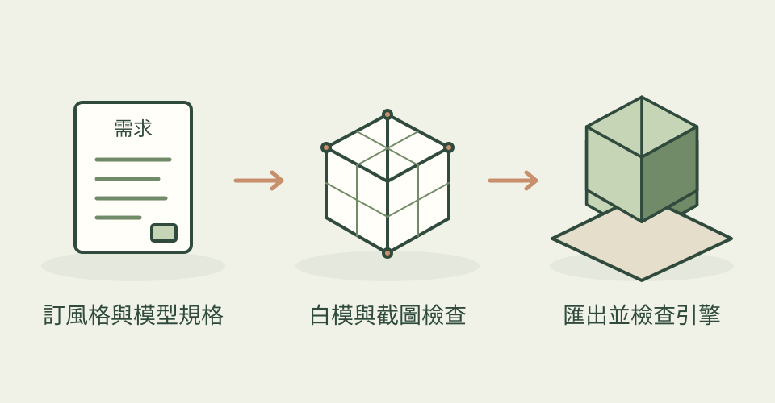

想要一組能拼接的遊戲走廊，重點不只在模型看起來漂亮，尺寸、原點、材質和匯出也必須一致。這套 Blender 工作規範讓 AI 先拆解需求，再按角色分工逐步製作與檢查。
它怎麼幫忙
director 負責安排流程，environment-artist 處理網格、轉角與填充模組，lowpoly-style 約束輪廓、面數與貼圖，export-pipeline 檢查比例、軸向、原點與材質，最後要求在目標引擎實際匯入。參考圖路線先分析鏡頭與大形，再以截圖比較修正。
94 種技能在 Claude 與 Cursor 目錄各有一份鏡像，不能合計為 188 種；它是指導 AI 操作 Blender 的文件合集。
三步驟看懂這個技能

把規格、建模與匯出串成可檢查的製作流程；本站功能示意，非作者成果或執行結果。
功能示意・本站繪製 放大查看可以這樣開口
這是一個可依需求修改的委託範例。
幫我的復古小遊戲做牆、轉角和門框三種可拼接走廊模組，每片 2 公尺，低多邊形與 512px 貼圖。先給白模確認比例，再整理材質和原點，輸出 GLB 並附遊戲引擎匯入檢查清單。
適合什麼工作
適合會查看 Blender 場景、希望 AI 協助重複製作與檢查的獨立遊戲美術、技術美術和 3D 設計者。仍需要人判斷輪廓、拓樸與實際匯入結果。
開始之前
- 準備工具
- 作者 setup 列 Blender 3.0+、Python 3.10+（建議 3.11）、uv、Blender MCP addon，以及可用 MCP 的 AI 助手。這是文件最低條件，本站未驗證所有 Blender 版本與 94 種技能，也未驗證 Codex 整合。
- 使用成本
- Blender 與本合集免費，MIT 使用需保留聲明；AI 助手訂閱或 API 用量另計。基本程式建模沒有必需的付費生成 API；選用 Hyper3D、Hunyuan3D 或外部素材時，費用與資產授權另外確認。
- 交付內容
- 可修改 Blender 場景、遊戲模型與 GLB 等匯出檔、製作與匯入檢查清單
- 先留意
- 2026-11-06 首次收錄；專案建立於 2026-07-05，目前分支提交日期為 07-10，並非今日發布。1,929 星屬於整個儲存庫。主圖是作者太空船模型，不是本文走廊需求的實測成果；需求範例由本站提出。本站核對 README、真實技能與授權，沒有執行候選程式，不保證自動交付商用成品。
作者與來源
本文依作者公開說明整理，沒有實際執行這個專案。功能插圖由本站繪製，原作者範例另行標示；並非本站執行技能的測試結果。GitHub 星數為專案總量，觀察時間為 2026年11月13日 08:34（台北時間）。
與前次快照相比增加 78 星；這不是 GitHub Trending 排名。